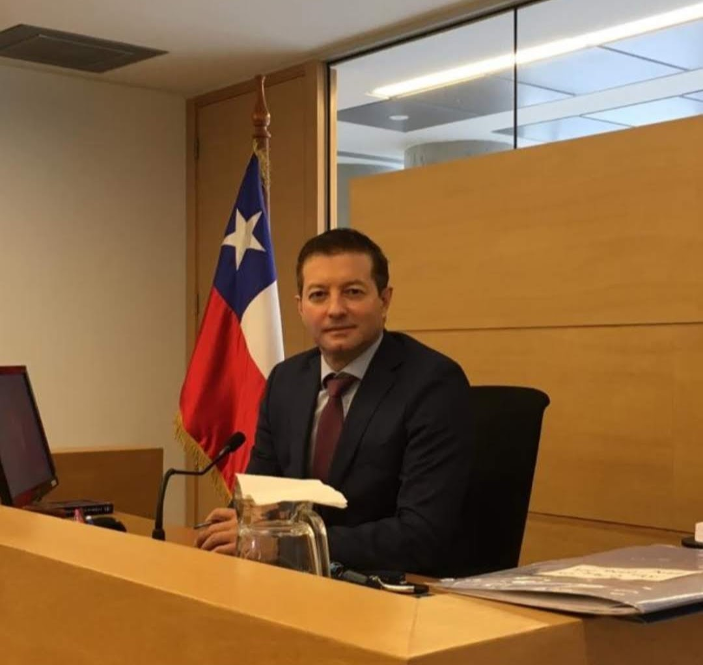

El derecho, conectado con la realidad de cada territorio.
En BKO Bentjerodt Koplin y Oyarzun Consultores entendemos que una asesoría jurídica eficaz requiere algo más que conocimiento legal. Requiere comprender el negocio, conocer la actividad y estar cerca del lugar donde se toman las decisiones y se desarrollan las operaciones.
Nuestra presencia en Calama, Santiago y Puerto Varas responde a esa forma de ejercer la asesoría jurídica.
De norte a surDel desierto minero a los lagos del sur
1
Equipo interdisciplinarioJurídico, médico, social, contable y de seguros
CHILE / 22° S — 41° S
PERSONAS / BKO
Una mirada integral para situaciones que requieren comprensión jurídica, médica y psicosocial.
ENFOQUE MÉDICO-JURÍDICO Y PSICOSOCIAL.
Protegemos vínculos, no solo ganamos casos.
Derecho de Familia
Comprender, acompañar y proteger
El Derecho de Familia requiere comprender las relaciones personales, los vínculos y las circunstancias que rodean cada situación.
BKO propone una atención integral que articula la perspectiva jurídica con un enfoque médico y psicosocial, considerando las necesidades de niños, niñas, adolescentes y adultos.
Ofrecemos asesoría y representación especializada en materias laborales, abordando las relaciones entre trabajadores y empleadores desde una perspectiva jurídica, estratégica y procesal.
Protegemos tus negocios. Aseguramos tu crecimiento.
Soluciones de seguros para empresas, constructoras, profesionales y personas. Asesoría especializada para proteger operaciones, patrimonio y proyectos.
Una mirada estratégica para proteger tu actividad.
FINANCIAMIENTO
Vinculamos a pequeñas y medianas empresas con agentes financiadores para adquirir maquinaria o desarrollar proyectos, acompañando la presentación de sus necesidades de inversión y la búsqueda de alternativas.
Un equipo de profesionales que integra experiencia jurídica, atención médico-psiquiátrica, gestión empresarial y seguros, con funciones y especialidades propias.

Socio principal
Socio Principal | Ex Magistrado
Jorge I. Saavedra Bentjerodt
Abogado, Ex Juez de Familia, Garantía y del Trabajo, con 25 años de ejercicio profesional transitando desde la Salud Pública al Poder Judicial y a la asesoría de alta dirección.
Abogada | Magíster en Derecho del Trabajo y Previsión Social | Litigante | Académica y Autora Jurídica.
Camila Alejandra Kopplin Lanata
Abogada con más de 16 años de ejercicio profesional, especializada en Derecho del Trabajo, Derecho Procesal Laboral y relaciones laborales individuales y colectivas.
Experta en Negocios y Seguros Corporativos | Encargada del Área de Seguros BKO
Roxana Ximena Oyarzún Bustamante
Profesional especializada en financiamiento de proyectos, negocios y seguros corporativos, con un enfoque de asesoría a empresas y personas de los sectores minero, marítimo, de la construcción y comercial.
Ingeniero Civil | Creador de CAUCE Gestión Integral
Luis Miranda Chavarría
Luis Miranda Chavarría, ingeniero civil, desarrolla su actividad en gestión de proyectos, intermediación y asesoría empresarial, con especial vinculación a empresas proveedoras de servicios para la minería y actividades afines, tanto en Calama como en Santiago.
La Dra. Fenella Reyes Gonzalo es Médico Cirujano por la Universidad de Santiago de Chile y especialista certificada en Psiquiatría Pediátrica y de la Adolescencia por la misma universidad. Complementa su formación con estudios de posgrado en otras instituciones. Entre ellos se encuentran el Diplomado en Destrezas Clínicas en Adicciones de la Pontificia Universidad Católica de Chile y el Diplomado en Apego y Psicopatología del Desarrollo del Centro de Apego y Regulación Emocional (CARE) de la Universidad del Desarrollo.
Asistente Social | Licenciada en Trabajo Social | Diplomada en Mediación Familiar | Perito Social Judicial
Makarena Andrea Ponce Villarroel
Makarena Andrea Ponce Villarroel es Asistente Social y Licenciada en Trabajo Social, con Diplomado en Mediación Familiar y formación de Magíster en Intervención Socio Jurídica en Familia de la Universidad Andrés Bello. Asimismo, ha sido nominada como Perito Social Judicial por las Cortes de Apelaciones de Valparaíso, Puerto Montt y Antofagasta para el bienio 2026–2027.
Estefanía es asistente contable de BKO y está a cargo de la gestión de CAUCE Gestión Integral, el sistema de la oficina para organizar y dar seguimiento documental a las carteras de cobranza. Su labor comprende la organización y revisión de antecedentes comerciales y contables, la conciliación de pagos y el seguimiento de saldos, identificando inconsistencias y documentación pendiente. Asimismo, apoya la preparación de expedientes para su evaluación por el área jurídica, contribuyendo a mantener información ordenada, respaldada y trazable durante las distintas etapas del proceso de recuperación.